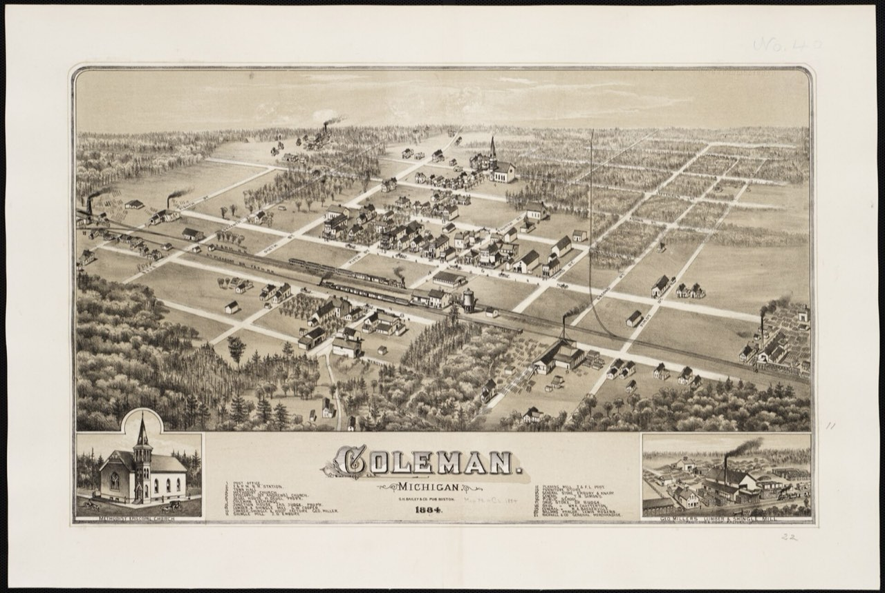
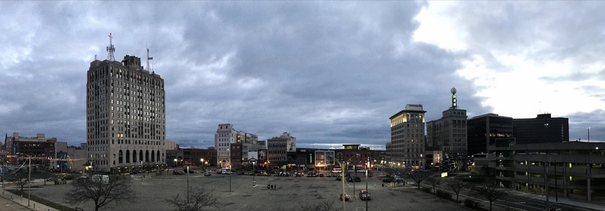
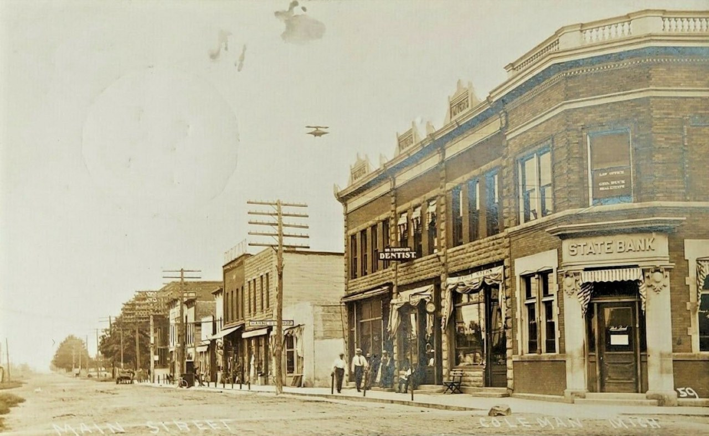
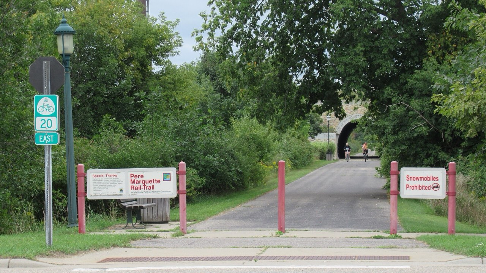
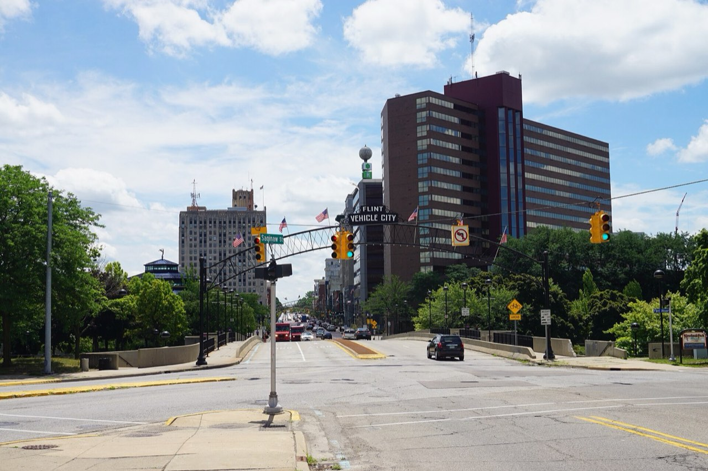

Coleman, 1884 bird's-eye view · Boston Public Library, CC BY 2.0.jpg){kind=link}
Coleman
Midland County planning site with on-site feedstock opportunities and co-location potential. A rail town since the 1870s.
Planning is currently authorized for two Michigan sites — Coleman and Flint. Each maintains a governed site file so assumptions, regulatory notes, infrastructure constraints, community context, and partner coordination stay traceable and separate.

Coleman, 1884 bird's-eye view · Boston Public Library, CC BY 2.0Midland County planning site with on-site feedstock opportunities and co-location potential. A rail town since the 1870s.

Downtown Flint · WeaponizingArchitecture, CC BY-SA 4.0Brownfield-aligned recovery planning site with logistics access and existing materials-reuse history.
The Coleman site file tracks each readiness dimension below. Where source documents are pending, the record carries a placeholder rather than an invented claim.


Site overview, location details, ownership context, and current project relevance — documented as sources are received.
Source-backed notes on material streams, handling assumptions, and known constraints, including on-site feedstock opportunities.
Permitting, compliance, zoning, and regulatory considerations. Draft notes are never treated as approvals.
Utility access, transportation, site logistics, and infrastructure dependencies for co-location planning.
Community context, environmental justice considerations, and approved engagement references.
Unresolved site questions requiring verification, source documents, or decision routing — logged, owned, and tracked.
The Flint site file follows the same governed structure, with planning attention to brownfield alignment, logistics, and community engagement.

Site overview, ownership context, brownfield alignment, and current project relevance — documented as sources are received.
Material streams under evaluation, logistics assumptions, storage needs, and the site's existing materials-reuse history.
Permitting path, zoning, environmental review, and compliance considerations tracked with status and authority.
Utility access, transportation and logistics connections, and infrastructure dependencies.
Community context, environmental justice considerations, and approved engagement references for the host community.
Unresolved questions logged for verification, source documents, or decision routing.
{kind=link}
{kind=link}
{kind=link}
.jpg){kind=link}
{kind=link}